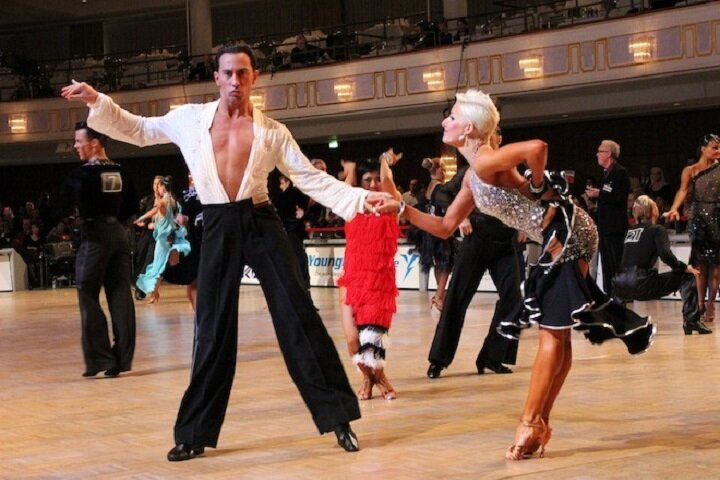

How to Build a Latin Routine 
3 August 2016
Latin routines are easy to make, but good Latin routines are very hard to make. Good routines will take into account alignment in Cha Cha and Rumba, something never thought about in social dancing. Good routines will take into account the types of Bounce in Samba and where those types of Bounce occur throughout the routine. Good routines will phrase Jive in eights - a dance that likes to phrase all basic figures with sixes. Good routines will do all these things and more in order to make your dancing look more exciting to the judges and the audience, and today we are adding the additional challenge of keeping it within the Syllabus.
If you also dance Standard, make sure you check out BGBB's previous article on how to build a Standard routine.
Musicality
Whereas in Standard, all the dances are rather similar to each other, the Latin dances are vastly different, and so there are fewer general principles that can be applied to all the dances. That said, musicality will always be one of the most important aspects of your dancing. If you haven't read BGBB's post on Musicality and Phrasing, definitely check it out. The short and sweet of it as it applies to building a Latin routine is this: each phrase consists of eight bars of music (a bar in Samba is 2 beats, Rumba is 4 beats, etc.), and each phrase should match a chunk of your routine. Furthermore, certain parts of the phrase are musically more powerful (like the first beat of the entire phrase), and so you should make them coincide with powerful steps in your routine, like step 1 of a Natural Roll in Samba. By paying attention to phrasing, your dancing will look stronger and more beautiful without you having to try. When your dancing corresponds to the music, that is called musicality, and it's one of the most beautiful things in dance. Although there are many ways to make your dancing musical, phrasing is an easy one that you get to do ahead of time and then just enjoy the benefits of.
Cha Cha and Rumba
The main problem most Syllabus dancers have with their Cha Cha and Rumba routines are that they don't take the audience into account. You should always be aware that an audience is watching you, and your routine should be designed so that at certain times you show your front to the audience and at certain times your back. By being aware of this, you will engage the audience more. Sometimes the audience includes judges, and sometimes you look stronger even from the other side of the room because judges can see you have captivated a crowd.
Fan Position is one of the most problematic places in the routines of most Syllabus dancers. Fan Position should always be danced so that the Man faces the audience, thereby presenting the couple outward to the audience. New Yorks are another good example of a figure that can be danced at the audience. The point of the New York is to open up and present yourselves, so there is little benefit dancing that into LOD and against LOD. A good combination would be New York to the audience, followed by a Hand to Hand opening again to the audience, followed by either another New York or a Spot Turn.
Samba
Samba is one of the most exciting and most complex dances because it has so many different rhythms, and so if you want your Samba to be exciting, you have to show these rhythms as well. In the Syllabus, you get the following rhythms: 1a2, 1a2a3a4, SS, SQQ, QQS, QQQQ, 123. The problem comes when your routine looks like this
| Bad Routine | Counts |
| Whisk to L | 1a2 |
| Whisk to R to PP | 1a2 |
| Samba Walk in PP | 1a2 |
| Side Samba Walk | 1a2 |
| Criss Cross Bota Fogos | 1a2 1a2 |
| Criss Cross Voltas | 1a2a1a2 1a2a1a2 |
Notice that the routine above consists solely of the 1a2 or 1a2a1a2 rhythms. This is extremely boring to watch, and hopefully boring to dance as well. This routine would be much improved by adding some figures with different timings. In Bronze, not all the timings are available, but SS is available in the Rhythm Bounce, SQQ is available in the Closed Rocks, and SQQQQQQ is available in the Corta Jaca. Your Samba routine doesn't have to change rhythms every single bar, but going for four bars with a single rhythm is probably the maximum you should do to keep your Samba interesting.
Paso Doble
Paso Doble is really easy to choreograph. Most of the figures are kind of like Standard, so they put you in good alignments to use other figures without you having to try. If you get stuck, use the Sur Place for four or eight beats to link figures together. The Sur place can be turned up to 1/4 over four steps in either direction, so it is the perfect linking figure.
In a most Syllabus Paso Doble routines, what is missing is correct phrasing. Paso is always danced either to the song España Cañi, or to another song that has been built to have the exact same phrase structure as España Cañi, giving you the extremely important ability to make your routine embody this music. Learn the song, learn the pieces, and choreograph your dancing to the song. At the very least, make sure you hit the highlights properly. Typically Syllabus Paso events play only to the second highlight, so there is no need to choreograph past that - just repeat the routine from there.
Jive
Jive is both the easiest and the hardest dance to choreograph. It is the easiest because there is basically only Closed Position and Open Position, and alignments don't matter, meaning whatever figure you just danced, you have dozens of choices of what can come next. Unlike Cha Cha and Rumba, it isn't important to open yourself up to the audience in Syllabus Jive, and you just want to display two people who are really into each other and having fun. The hard part about choreographing Jive is doing it to the music.
Most figures in Jive take six beats. Some example are: the Fallaway Rock, the Link, the Fallaway Throwaway, the Hip Bump, and many more. The problem with this is that the music comes in phrases of four or eight, and six doesn't go evenly into either. As discussed in the article on Musicality and Phrasing, you want your bars of music and especially phrases of music to coinicide with your dancing, so it takes a bit of trickery to get your Jive to be musical.
Firstly, know all the figures that take eight beats: the Stop and Go, 1-5 of Fallaway Rock or Link turning R (or Curly Whip) into the Whip, 1-5 of Fallaway Rock or Link turning R (or Curly Whip) into the Whip Throwaway, the Reverse Whip, and Rolling off the Arm. These are all the figures in Jive that take eight beats normally, and they all have the rhythm QQ QaQ QQ QaQ. These figures should be used to take two full bars of music, starting on the 1 and not the 3, by which it is meant that they should be counted 12 3a4 56 7a8 and not 34 5a6 78 1a2, which is considerably weaker in terms of musicality.
Next, try always to have the Rock Step occur on 1 2 or 7 8, but never on 3 4 or 5 6, because the Rock Step is more properly used to begin or end a phrase of eight beats. Let's say you have a Change of Places Right to Left (12 3a4 5a6) followed by a Change of Places Left to Right (78 1a2 3a4). Now you need to do a Rock Step, but that would force it to occur on 5 6, which we don't want. You might avoid this by dancing a Double Link. When dancing a Link (QQ QaQ going from Open to Closed Position), you may dance the Rock Step twice in a row. At Silver and above, this Rock Step can be replaced by a Point, Flick, or Hesitation Ball Change. This will allow you to dance a Rock Step on 5 6 and then again on 7 8. Turn this Link to the R and follow with a Whip or Whip Throwaway to complete the phrase.
In fact, there are many figures that allow you to repeat parts of them or change the timing. During the Whip, you can repeat the crossing behind (Lady walking forward) an extra two steps. During the Walks, you can dance two, four, or six walks in PP to fit your phrasing. The Toe Heel Swivels allow you to use multiple timings depending on what suits your phrasing. Learning these uncommon ways of dancing figures and using them properly can make your routines more musical.